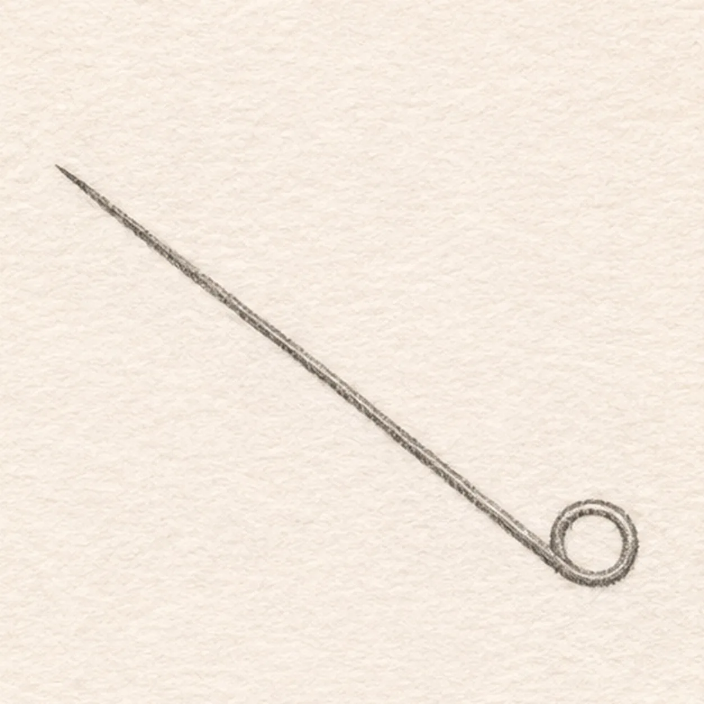
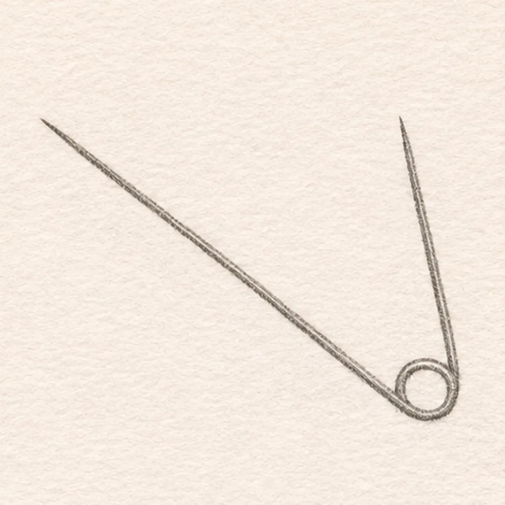
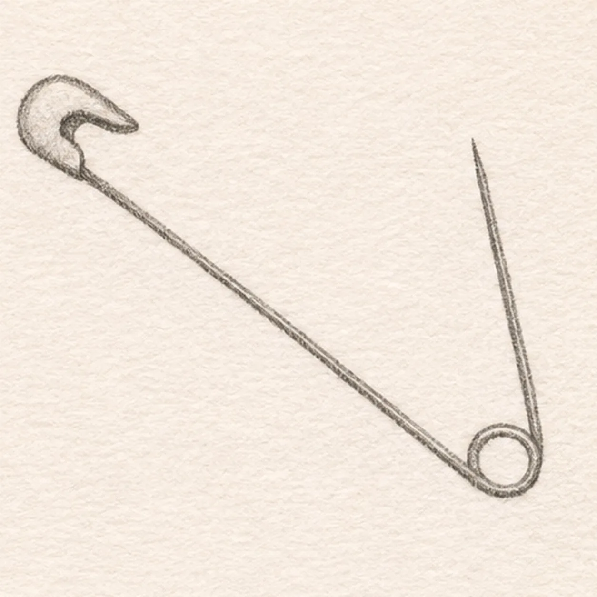
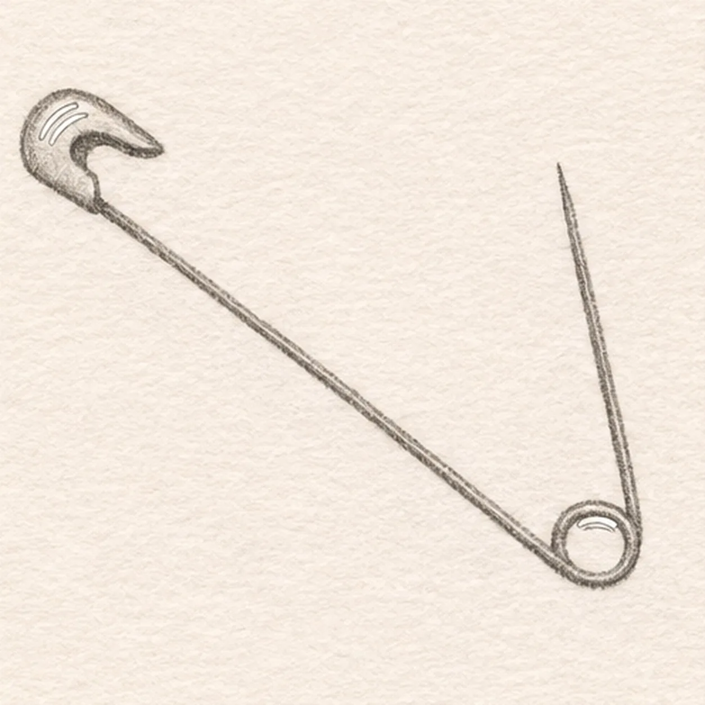
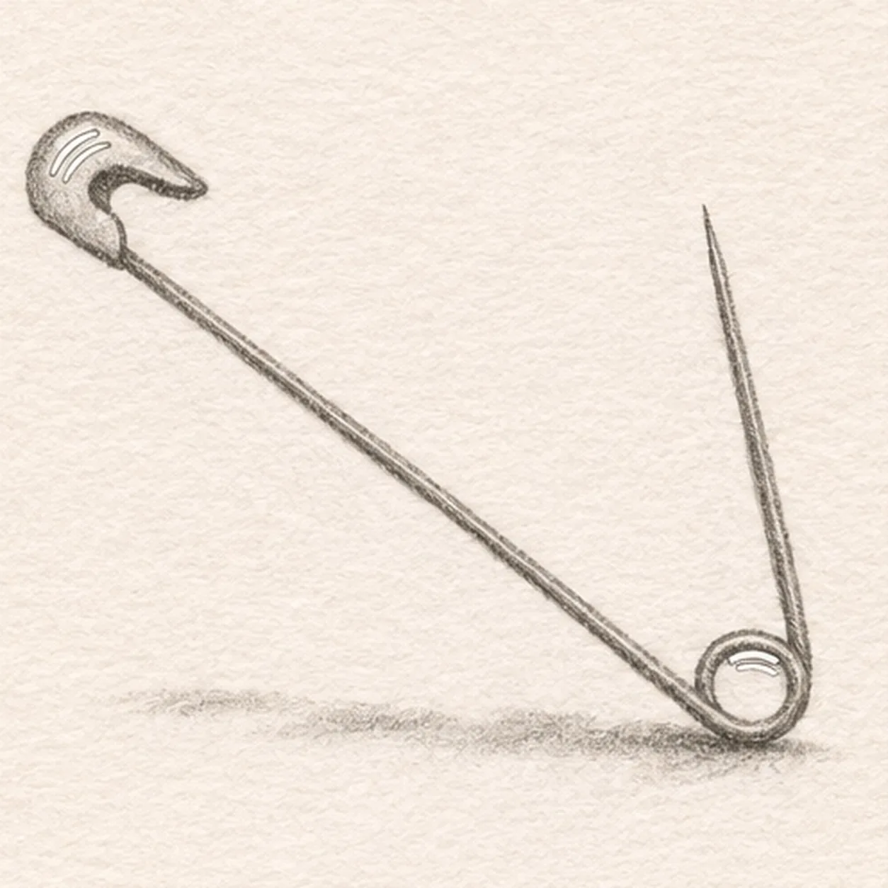

Pencil ready?
Let's draw an open safety pin
Treat this as one small practice round: build the subject lightly, notice the shapes, then darken only the lines that help the finished sketch.
-
01

Draw the spine and coil
Draw a long diagonal spine down-right and loop its lower end into one complete round coil.
Sketch tip: Make the coil fully round before raising the point.
-
02

Raise the open point
From the coil, pull a straight slim arm upward and taper it to a point, leaving a wide gap to the spine top.
Sketch tip: Keep the two arms apart so the pin reads as open.
-
03

Fold the clasp
At the top end of the spine, draw a folded hook clasp with its opening facing the pointed arm.
Sketch tip: Face the clasp opening toward the point.
-
04

Leave metal glints
Add two short parallel glints inside the clasp and one tiny curved glint inside the coil.
Sketch tip: Leave the three glints as pale paper.
-
05

Set the ground shadow
Shade a broken horizontal shadow below the pin, darkest under the coil.
Sketch tip: Keep the shadow broken and quiet.
-
06
Shade the metal
Strengthen the established spine, arm, coil, and clasp with 2B graphite, leaving the existing glints pale and deepening the existing ground shadow.
Sketch tip: Stop while the graphite still looks like pencil on paper.